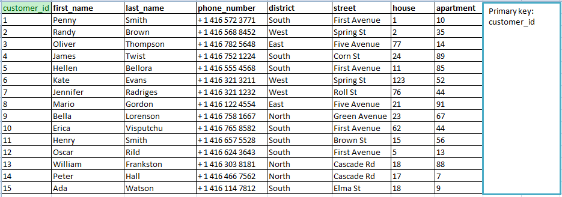
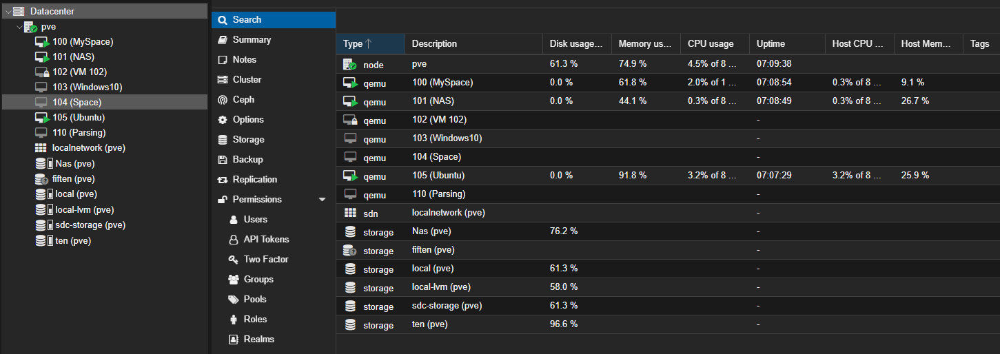
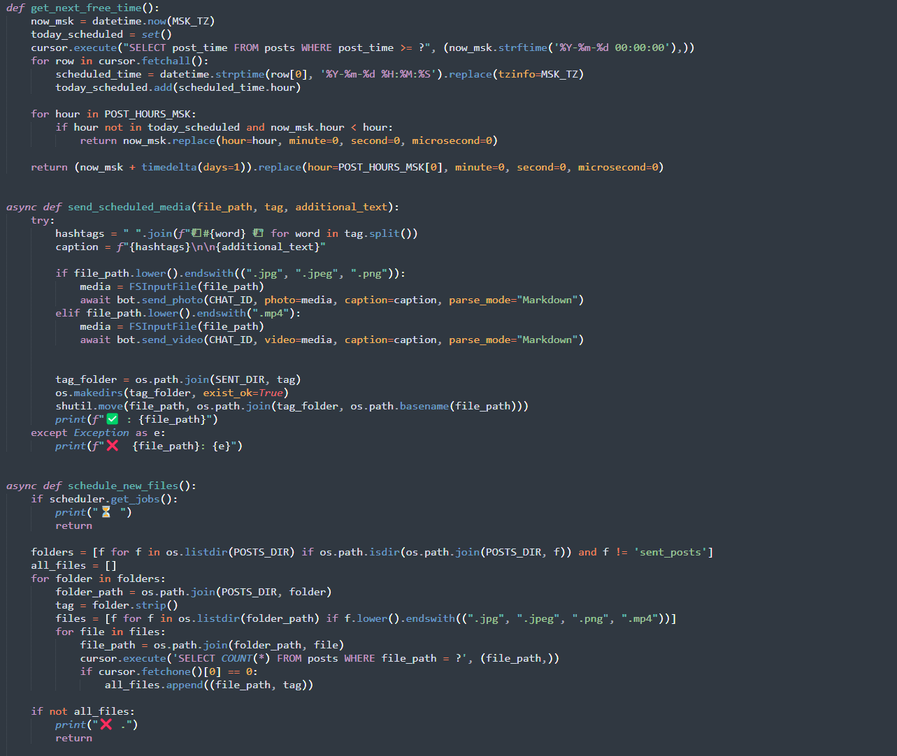
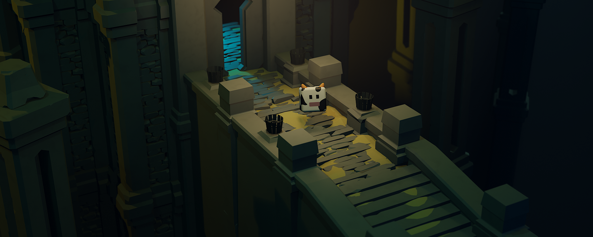

Python and Automation
Scripts, workflows, parsers, convenient information gathering, and data sorting to speed up routine tasks.
Freelancer // Automation // Design
I am a freelancer who handles different tasks and delivers results. My main focus is Python and automation.
Positioning
A freelancer who can step into different task formats: code, content, and visuals.
Strong technical base plus creative background.
Calm communication and a clean execution style.
My experience is still growing, so the pricing is aligned with that.
Skills
Scripts, workflows, parsers, convenient information gathering, and data sorting to speed up routine tasks.
Experience in Photoshop, video editing, and creating design solutions for specific tasks. I am currently studying AI-assisted design.
I can take on non-standard tasks, quickly dive in, and propose a practical solution.
Background
I used to run YouTube and Twitch channels, so I understand presentation, audience, and visual rhythm.
I combine technical thinking, design, and content experience in one project. I also worked as a fashion designer.
Cases

Collecting, cleaning, and sorting data by required parameters.

Scripts for routine tasks, reports, and repeatable scenarios.

Automating channels, publications, and bot workflows.

Content styling and visual presentation for projects.
Contacts
The best way is to message me directly on Telegram.
Message on TelegramPersonal profiles: